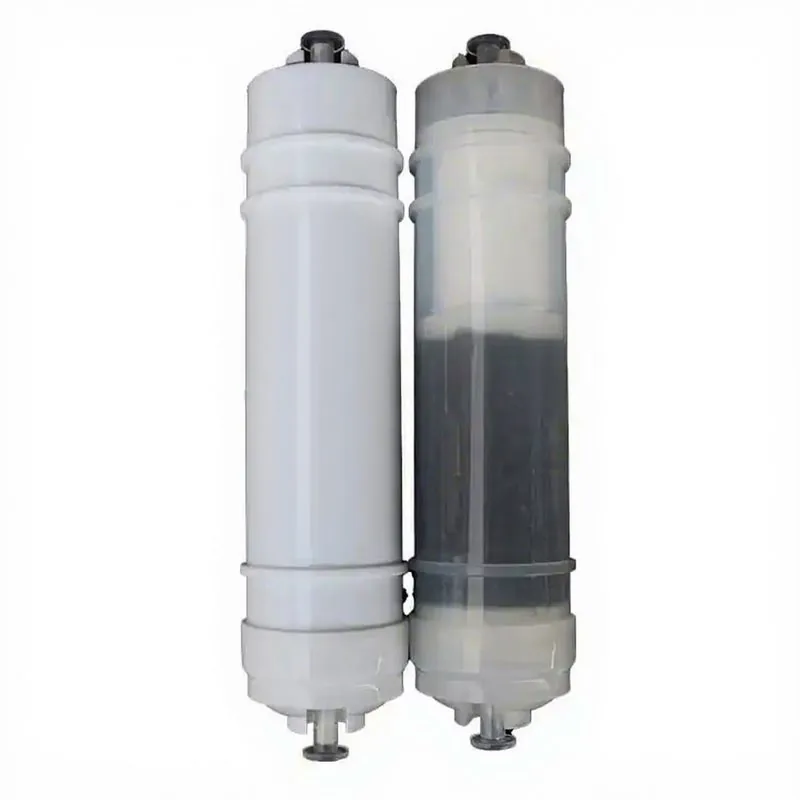
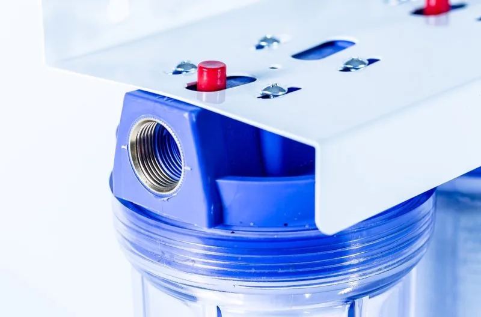
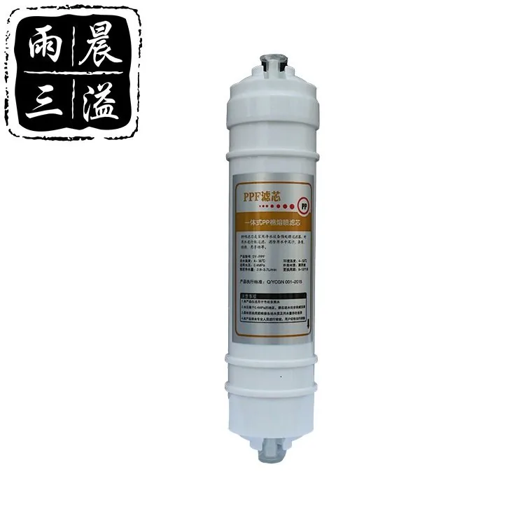
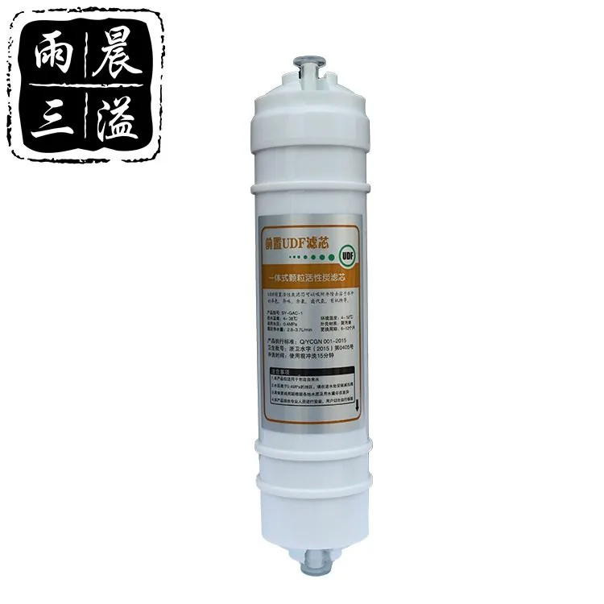

Multi-Stage Filter Cartridge Combination
Filter CartridgeMulti-Stage Filter Cartridge Combination should be selected by membrane capacity, feed-water pressure, filter-stage layout, installation position and service access. For distributor or appliance-brand programs, confirm the faucet, tank or tankless layout, replacement filters and private-label packaging before quotation. Key specifications include Stages: 3–5.
Buyer selection notes
Buyers comparing Multi-Stage Filter Cartridge Combination should look beyond the model name and check membrane output, filter-stage sequence, inlet-pressure range, service access and installation format. For OEM RO water purifier programs, the quotation should also define panel language, faucet or tank options, replacement filters, logo placement and export carton requirements.
Details to confirm before quotation
- Membrane capacity, inlet pressure and expected daily water volume
- Under-sink, countertop, cabinet or wall-mounted installation
- Filter-stage sequence, faucet, tank or tankless layout
- Private-label panel, manual, carton and spare filter plan
Buyer notes for Multi-Stage Filter Cartridge Combination
For Multi-Stage Filter Cartridge Combination, this product page should help buyers understand application fit, compatibility and order requirements. The most useful content is model-specific information rather than broad factory or wholesale claims.
Information to confirm
- Application and compatible system
- Size, material, connection and performance target
- Order quantity, label and packaging plan
- Destination market and documentation needs
Technical Specifications
| Stages | 3–5 |
|---|---|
| Combination | Custom |
Key Features
- Configured around Multi-Stage Filter Cartridge Combination with model-specific application details.
- Specification review covers size, connection, flow and replacement planning.
- Private-label labels, manuals and cartons can be prepared after model confirmation.
- Sampling and bulk orders should confirm target market and installation conditions.
- Export packing is matched to product size, accessories and carton requirements.
Related Products
Related Products

Medium Size Water Filter w/ Copper Connector
Medium Size Water Filter w/ Copper Connector — Connector: Copper.
Send Inquiry

Pre-UDF Activated Carbon Cartridge
The Integrated Quick-Connect UDF Coconut-Shell Granular Activated Carbon Filter Cartridge – Series 2 uses a integrated quick-connect, series 2. It uses Coconut-shell granular activated carbon (GAC/UDF).
Send InquiryRequest a quote for Multi-Stage Filter Cartridge Combination
Send quantity, target market, configuration notes and packaging requirements for Multi-Stage Filter Cartridge Combination. Yuchen Water will confirm matching options, accessories and export details before pricing.